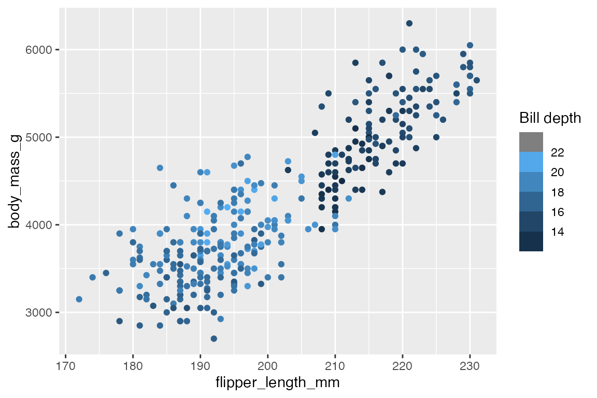
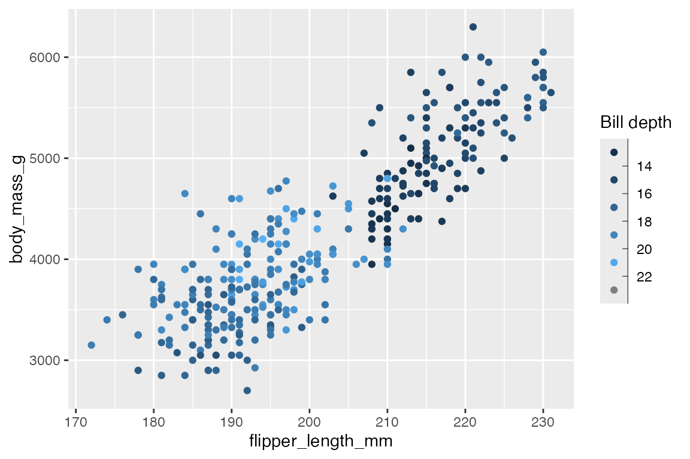
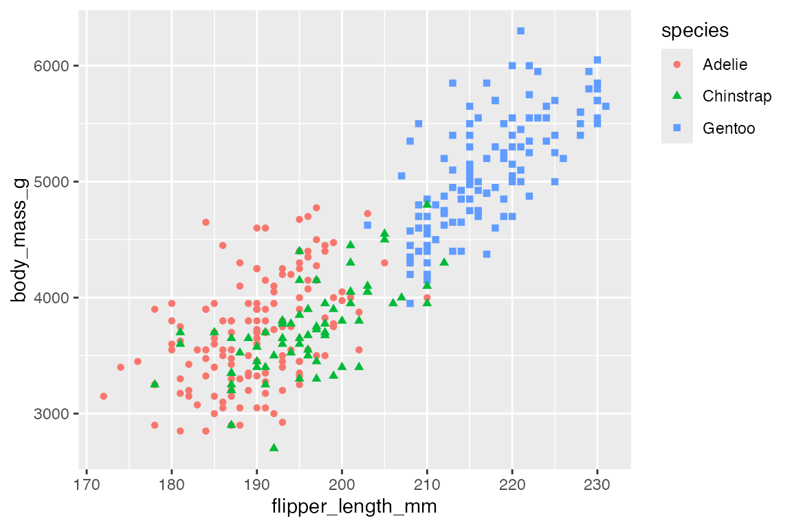
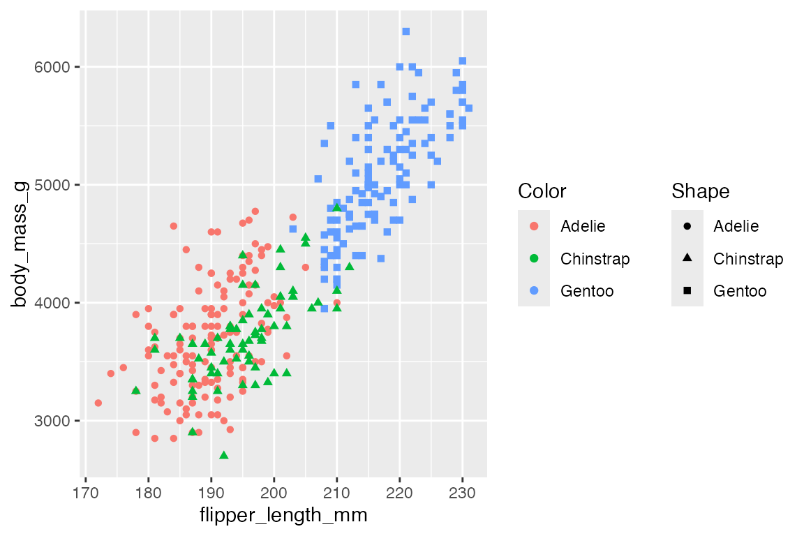
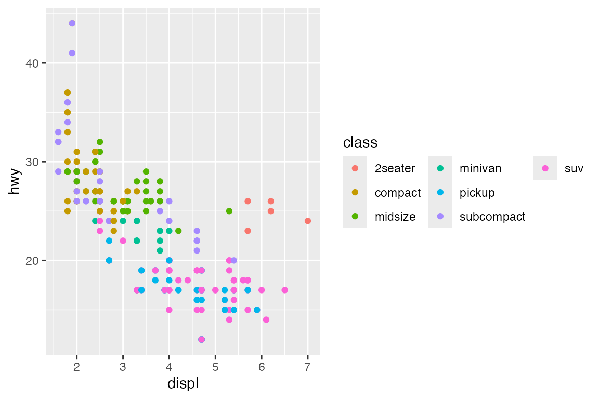
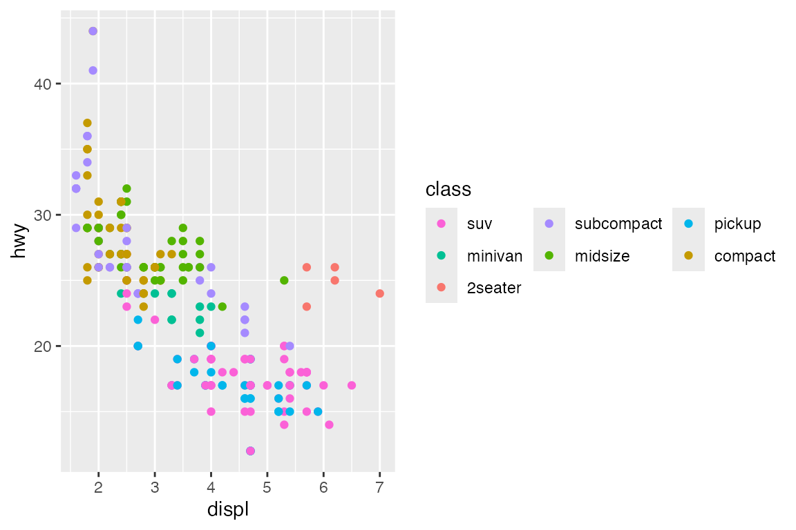
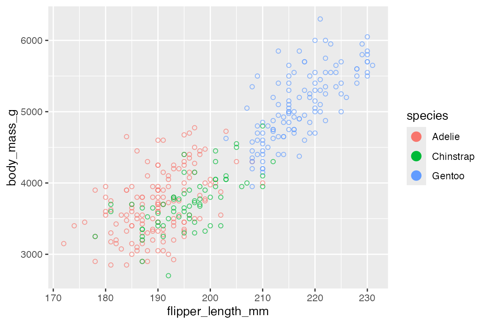
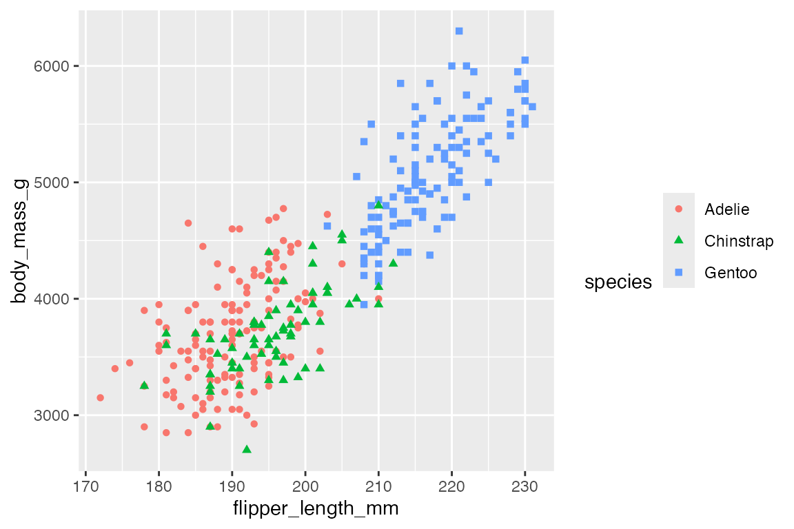
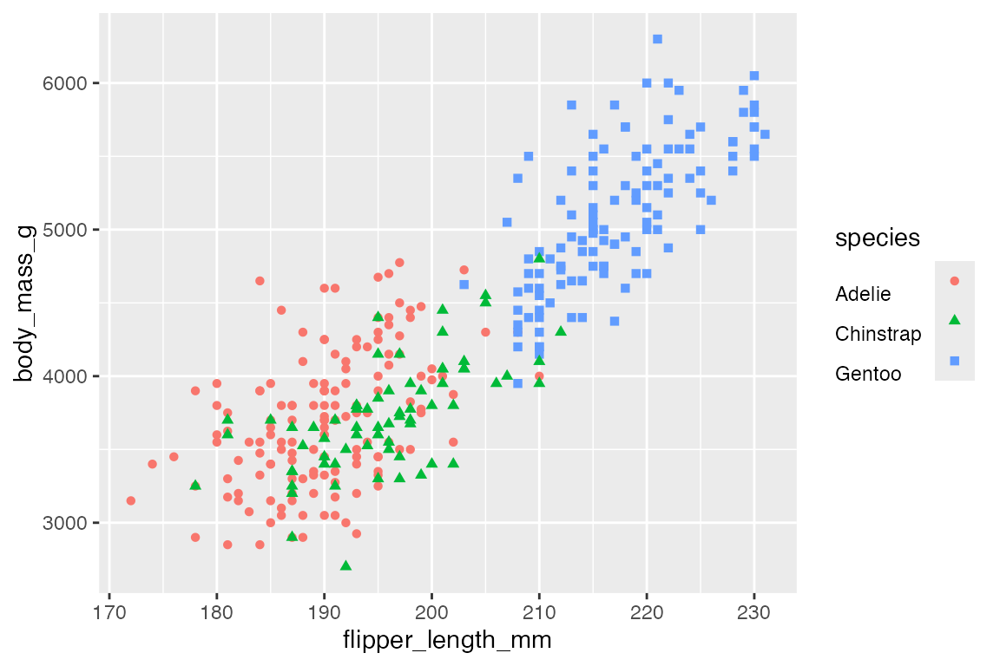
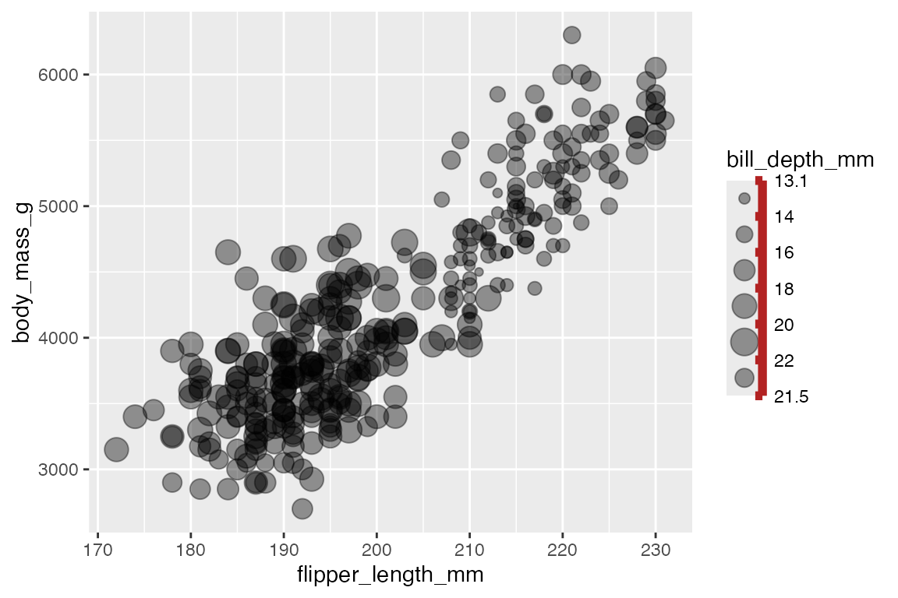

21 Guides: Legends
Guides are the collective name for axes and legends, which help readers interpret plots. The data elements of guides are largely driven by scales, but the appearance of the guides, and especially of legends, can also be controlled with guides(), specific guide_*() functions, or through theme() elements. Generally, the guide_*() functions control aspects that more directly affect how the scales of the plot are represented, while theme() affects non-data aspects of the plot/legend aesthetics. However, there is a great deal of overlap. One difference is that the guide_*() functions work on one scale at a time, whereas theme() can change aspects of legends that include more than one aesthetic in a single legend or multiple legends.
- See Scales: Axes labels for the discussion of guides in
scale_x/y_*()functions and position labels. - See Scales: Other scales for how to alter aesthetic scales, breaks, and labels used in legends.
- See Themes: Legends for legend elements within
theme().
21.1 Resources
21.2 Removing a legend
Legends are created automatically by ggplot() when a non-positional aesthetic is mapped to the data (e.g. color, shape, size, alpha, etc.).
There are four ways to remove a legend:
geom_point(show.legend = FALSE)scale_color_discrete(guide = "none")guides(color = "none")theme(legend.position = "none")
These four different options demonstrate the relationship between these different elements in a ggplot2 plot. A legend can be turned on or off for one layer through the geom. However, the actual data aspects of the legend are mostly controlled through the guide argument of the chosen aesthetic scale. The guides() function is essentially a convenient way to access the guide argument for the chosen scale. Using either the guide argument or guides() allows you to address one aesthetic/scale/guide at a time: removing the guide in the color scale does not remove the shape guide, while removing the shape guide in guides() does not affect the color guide. Finally, the theme controls the position of the legend in the plot, making it possible to turn the legend off by giving it no position.
# 1. geom
p +
geom_point(show.legend = FALSE
)
# 2. scale
p +
geom_point() +
scale_color_discrete(guide = "none")
# 3. guide
p +
geom_point() +
guides(shape = "none")
# 4. theme
p +
geom_point() +
theme(legend.position = "none")
21.3 Legend titles
Legend titles provide another way to see how elements in a ggplot2 plot are related and come together to make a legend.
21.3.1 Set legend title
There are three ways to provide legend titles:
labs(color = "Species")scale_color_discrete("Species")guides(color = guide_legend("Species"))
The easiest is probably with labs(), but the first argument for scale_*() and guide_*() functions are name for the scale name and title to be used for the legend title. The exception is guide_colorsteps(), which requires title to be a named argument.
21.3.2 Merge and split legends
Legend titles are one way to merge or split legends. By default ggplot2 merges legends of the same variable, but they can be split by giving them different names.
p +
geom_point() +
labs(color = "Color",
shape = "Shape")21.3.3 Remove legend title
To remove the legend title set name to NULL or with theme(legend.title = element_blank()).
p +
geom_point() +
theme(legend.title = element_blank())21.4 Guide functions
To change the type of legend or elements within the legend from the defaults use one of the guide_*() functions.
-
guides(): general convenience function to set guides en masse likelabs(). -
guide_colorbar(): continuous scales for color/fill aesthetics. -
guide_colorsteps(): binned scales for color/fill aesthetics. -
guide_axis(): position scales (continuous, binned and discrete) -
guide_legend(): discrete scales (except position scales) -
guide_bins(): binned scales (except position/color/fill scales)
One reason to change the type of legend is to switch between continuous and binned versions of legends. Note that this does not change the scale in the plot from continuous to binned but only its representation in the legend. See Section 19.3 on changing the scale between continuous and binned within the plot itself.
For more details on using and tweaking the different types of legends see Section 21.8 below.
21.4.1 Continuous to binned
Change from a continuous scale that uses guide_legend() to a binned legend with either guides(size = legend_bins()) or guides(size = "bins").
penguins |>
ggplot(aes(x = flipper_length_mm,
y = body_mass_g,
size = bill_depth_mm)) +
geom_point(alpha = 0.4) +
guides(size = "legend")
penguins |>
ggplot(aes(x = flipper_length_mm,
y = body_mass_g,
size = bill_depth_mm)) +
geom_point(alpha = 0.4) +
guides(size = "bins")21.4.2 Color bar to color steps
Change from a continuous color scale to a binned color scale with either guides(color = guide_colorsteps() or guides(color = "colorsteps").
penguins |>
ggplot(aes(x = flipper_length_mm,
y = body_mass_g,
color = bill_depth_mm)) +
geom_point() +
labs(
color = "Bill depth")
penguins |>
ggplot(aes(x = flipper_length_mm,
y = body_mass_g,
color = bill_depth_mm)) +
geom_point() +
guides(color = guide_colorsteps(
title = "Bill depth"))
21.4.3 Color bar to geom legend
You can also change a color bar legend to a normal geom legend that uses the default key glyph for the geom and binned colors with the given number of breaks in the scale by using guide_legend() or guide_bins().
penguins |>
ggplot(aes(x = flipper_length_mm,
y = body_mass_g,
color = bill_depth_mm)) +
geom_point() +
guides(color = guide_legend("Bill depth"))
penguins |>
ggplot(aes(x = flipper_length_mm,
y = body_mass_g,
color = bill_depth_mm)) +
geom_point() +
guides(color = guide_bins("Bill depth"))
21.5 Legend layout
The layout of the legend is controlled by both guide_*() and theme(). Remember that using guide_*() functions only affects one aesthetic at a time, while theme() affects all aesthetics and multiple legends if there are more than one.
21.5.1 Legend position
Legend position is controlled by theme(legend.position). The options are none, left, right, bottom, top to place the legend outside the plot area or a numeric vector of x and y positions within the plot on a scale of 0 to 1.
p +
geom_point() +
theme(legend.position = "top")
p +
geom_point() +
theme(legend.position = c(0.2, 0.8))Use theme(legend.justification) to anchor the position of the legend to the top or bottom of the plot when legend.position is left or right and to the left or right when legend position is top or bottom.
p +
geom_point() +
theme(legend.justification = "top")
21.5.2 Legend orientation
Legends can be oriented vertically or horizontally. The default is for legends positioned on the right and left to be vertical and those on the top and bottom to be horizontal. This can be changed with either guide_legend(direction) or theme(legend.direction). The primary difference is that guide_legend(direction) only affects one scale at a time, while theme(legend.direction) affects all scales.
# Legend orientation: guides
p +
geom_point() +
guides(color = guide_legend(direction = "horizontal"))# Legend orientation: theme
p +
geom_point() +
theme(legend.direction = "horizontal")
21.5.3 Legend arrangement
When there are multiple legends, use theme(legend.box) to arrange the legends either horizontal or vertical. You can use the legend.box.* arguments to further tune how the legends are arranged. The guide_*() functions also have an order argument if you want to manually order the legends.
p +
geom_point() +
labs(color = "Color",
shape = "Shape") +
theme(legend.box = "horizontal")
21.5.4 Legend organization
legend_guide() allows you to control the organization and order of the keys in the legend. You can do this with the nrow, ncol, byrow, and reverse arguments. We can see this in a plot with a lot of groups.
mpg |>
ggplot(aes(x = displ, y = hwy, color = class)) +
geom_point() +
guides(color = guide_legend(
nrow = 3, ncol = 3)
)
The byrow and reverse arguments dictate the order of the keys. The default is for the order of the keys to go down by column. byrow = TRUE changes this, while reverse reverses the order of the keys.
mpg |>
ggplot(aes(x = displ, y = hwy, color = class)) +
geom_point() +
guides(color = guide_legend(
nrow = 3, ncol = 3,
byrow = TRUE, reverse = TRUE)
)
21.6 Legend key glyphs
21.6.1 Key glyph aesthetics
The aesthetic features of the key glyphs can be altered with the override.aes argument and a list() of aesthetics. This can be useful for making points larger or for changing the alpha to make the glyphs clearer.
p +
geom_point(alpha = 0.7, shape = 1) +
guides(color = guide_legend(
override.aes = list(size = 4, shape = 16, alpha = 1)
))
21.6.2 Key glyph types
It is also possible to change the type of key glyphs drawn for the legend within the geom_*() function using any of the glyphs listed under the draw_key_*() functions, see Key glyphs for legends. They are used in two ways: key_glyph = "glyph-name" or key_glyph = draw_key_name.
p +
geom_point(key_glyph = "dotplot")
penguins |>
count(species, year) |>
ggplot(aes(x = year, y = n,
color = species)) +
geom_line(key_glyph = draw_key_timeseries)21.6.3 Key glyph spacing
The width and height of the area around the key glyphs can be changed with either the keywidth and keyheight arguments in the guide_*() functions or legend.key.width, legend.key.height, or legend.key.size arguments in theme(). keywidth and keyheight can either be a numeric that uses the base unit defined by legend.key.width, legend.key.height, or legend.key.size arguments in theme() or a grid::unit() object.
p +
geom_point() +
guides(color = guide_legend(
keywidth = 2,
keyheight = grid::unit(2, "cm")
))Controlling the width and height of the keys in theme() necessitates using a grid::unit() object.
p +
geom_point() +
theme(legend.key.size = grid::unit(2, "lines"))21.7 Legend title and label positioning
The values of the legend labels are controlled through scale_*() functions as shown in Section 19.3, while the content of the legend title is discussed above, Section 21.3.1.
The title and label positions for legends can be controlled with either guide_legend() or theme(), but for the structure of the labels, guide_legend() generally seems to be easier. You can also affect the aesthetic text elements of labels and titles within guide_legend() with the title.theme and label.theme arguments, but these are probably better left to theme(), see below Section 21.9 and Section 23.5.3.
Arguments affecting the positioning of the legend title:
-
title.position: Where to place the title in relation to the legend: top, bottom, left, and right. -
title.hjust: A number between 0 and 1 specifying the horizontal justification of the title. -
title.vjust: A number between 0 and 1 specifying the vertical justification of the title.
p +
geom_point() +
guides(color = guide_legend(title.position = "left",
title.vjust = 0), # align to bottom
shape = guide_legend(direction = "horizontal",
title.position = "bottom",
title.hjust = 0.5)) # center title
Arguments affecting the positioning of the legend labels:
-
label.position: Where to place the labels in relation to the legend: top, bottom, left, and right. -
label.hjust: Horizontal justification of the labels. -
label.vjust: Vertical justification of the labels.
p +
geom_point() +
guides(color = guide_legend(label.position = "left",
label.vjust = 0,
label.hjust = 0),
shape = guide_legend(direction = "horizontal",
label.position = "top",
label.hjust = 0.5))
21.8 Legend styling
Legend styling is controlled through a combination of guide_*() and theme() functions. The previous sections of this chapter have focused on the styling options for the generic legend produced with guide_legend() that are also available in the other guide_*() functions. This section will focus on the other guide_*() functions, first looking at guide_bins() and then at the two color legends: guide_colorbar() and guide_colorsteps().
21.8.1 Binned legends
The main difference between guide_legend() and guide_bins() is the drawing of an axis and ticks, as well as the addition of a lower and upper bounds of the bins in guide_bins() as shown in Section 21.4.1. These aspects are also the main things that you can change.
penguins |>
ggplot(aes(x = flipper_length_mm,
y = body_mass_g,
size = bill_depth_mm)) +
geom_point(alpha = 0.4) +
guides(size = guide_bins(axis.colour = "firebrick",
axis.linewidth = 2,
show.limits = TRUE))
21.8.2 Color legends
Base color plot
Code
pcolor <- penguins |>
ggplot(aes(x = flipper_length_mm,
y = body_mass_g,
color = bill_depth_mm)) +
geom_point()More customization is available with color legends.
Ticks
By default guide_colorbar() has tick marks to set off the breaks in the continuous color scale. guide_colorsteps() does not have tick marks by default since the breaks between the colors are more clear. Use the ticks argument to turn on or off tick marks and use ticks.colour and ticks.linewidth to control the ticks. Note the use of the British spelling of colour in the argument name.
pcolor +
guides(color = guide_colorbar(
title = "Bill depth",
ticks.colour = "firebrick",
ticks.linewidth = 0.8))Frame
You can put a colored frame around both continuous and binned color legends. By default there is no frame, but this can be changed with frame.colour, frame.linewidth, and frame.linetype. Note again the use of the British spelling of colour.
pcolor +
guides(color = guide_colorbar(
title = "Bill depth",
frame.colour = "firebrick",
frame.linewidth = 1))Bar height and width
One of the most useful aspects of a color legend that you can change is the height and width of the color bar.
pcolor +
guides(color = guide_colorbar(
title = "Bill depth",
title.position = "top",
title.hjust = 0.5,
barwidth = grid::unit(20, "lines"),
barheight = grid::unit(0.5, "lines"),
ticks = FALSE
)) +
theme(legend.position = "top")Color steps
To change from a continuous color bar legend to a binned color legend use guide_colorsteps(). Similar to the difference between guide_legend() and guide_bins() discussed above (Section 21.8.1), there are only a few differences such as not showing ticks by default and a show.limits argument whether the upper and lower bounds of the scale should be shown.
pcolor +
guides(color = guide_colorsteps(
title = "Bill depth",
title.position = "top",
title.hjust = 0.5,
barwidth = grid::unit(20, "lines"),
barheight = grid::unit(0.5, "lines"),
show.limits = TRUE
)) +
theme(legend.position = "top")
21.9 Legend styling: theme()
See also Themes: Legends
- Legend layout: see Section 21.5
-
legend.position: the position of legends none, left, right, bottom, top, or two-element character or numeric vector -
legend.direction: horizontal or vertical -
legend.justification: anchor point for positioning legend
-
- Bounding box of all legends
-
legend.box: arrangement of multiple legends (horizontal or vertical) -
legend.box.background: background of full legend area -
legend.box.just: justification of each legend within the overall bounding box -
legend.box.margin: margins around the full legend bounding box -
legend.box.spacing: The spacing between the plotting area and the full legend bounding box
-
- Bounding box of each legend
legend.background-
legend.margin: the margin around each legend -
legend.spacing: spacing between legends if there are multiple legends
- Legend keys: see Section 21.6.3
-
legend.key: background underneath legend keys (symbols of geoms) -
legend.key.size,legend.key.height, andlegend.key.width
-
- Legend text: see Section 21.7
-
legend.text: legend item labels -
legend.text.align: alignment of legend labels (number from 0 (left) to 1 (right)) -
legend.title: legend title-
legend.title.align: alignment of legend title
-
-
p +
geom_point() +
labs(color = "Color",
shape = "Shape") +
theme(
# Bounding box of all legends
legend.box.background = element_rect(linetype = "dashed",
fill = "lightgrey"),
legend.box.margin = margin(8, 8, 8, 8),
# Legend bounding box
legend.background = element_rect(color = "orange",
fill = "lightpink"),
legend.margin = margin(0, 6, 0, 6),
# Keys
legend.key = element_rect(fill = "lightblue",
color = "black"),
# Spacing between legends
legend.spacing = grid::unit(1, "cm"),
# Title
legend.title = element_text(size = rel(1.5)),
legend.title.align = 1,
# Labels
legend.text = element_text(color = "firebrick",
face = "bold")
)